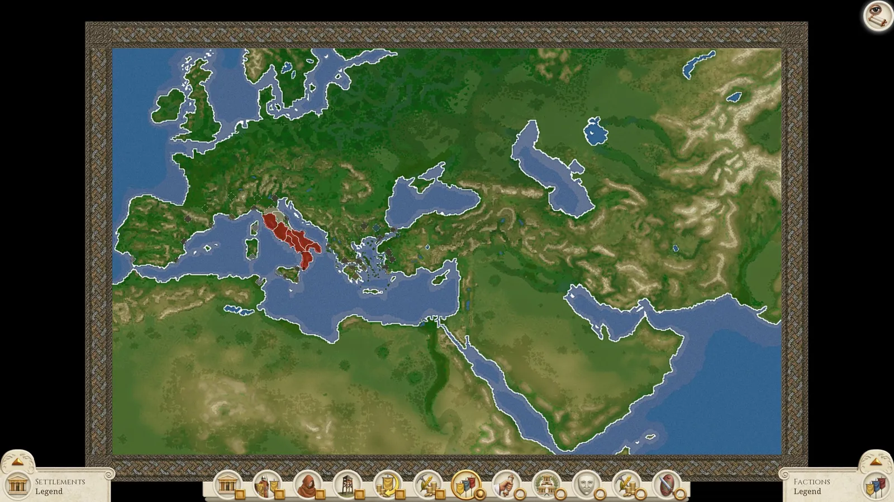
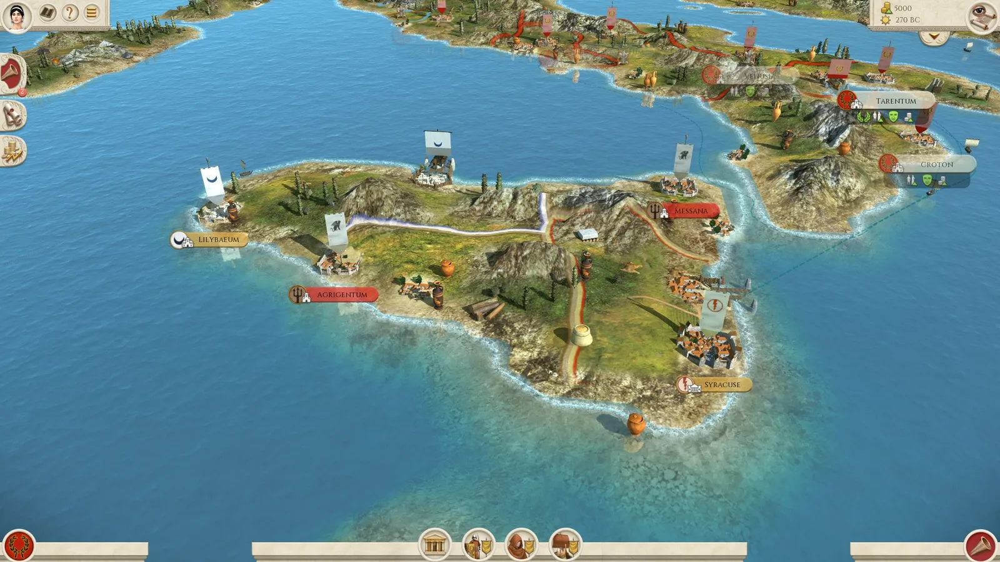
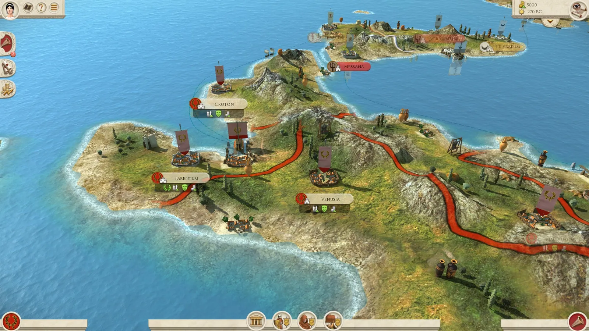
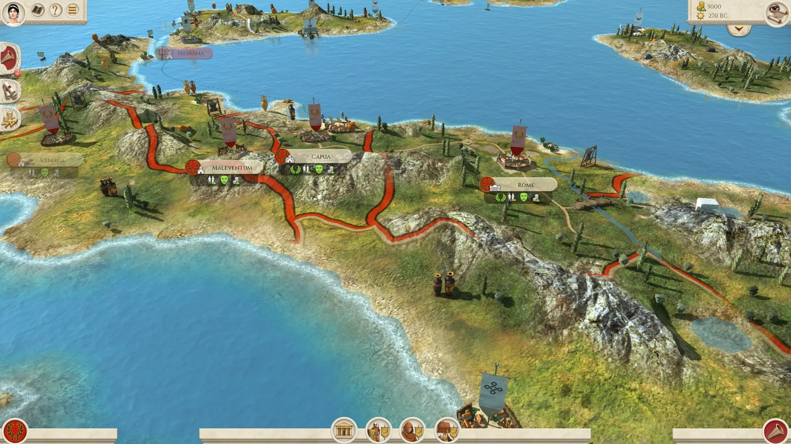
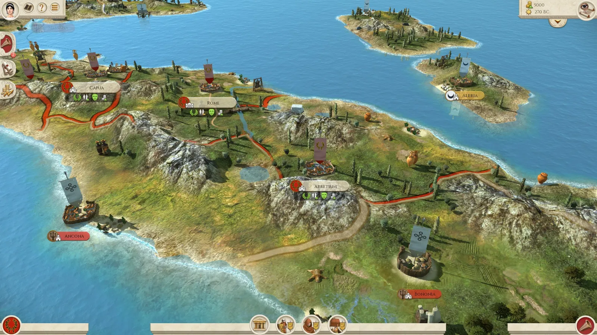
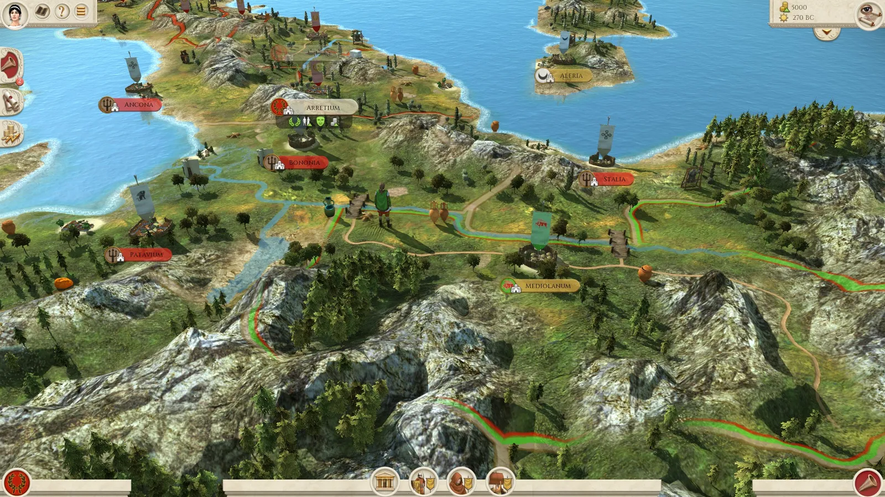
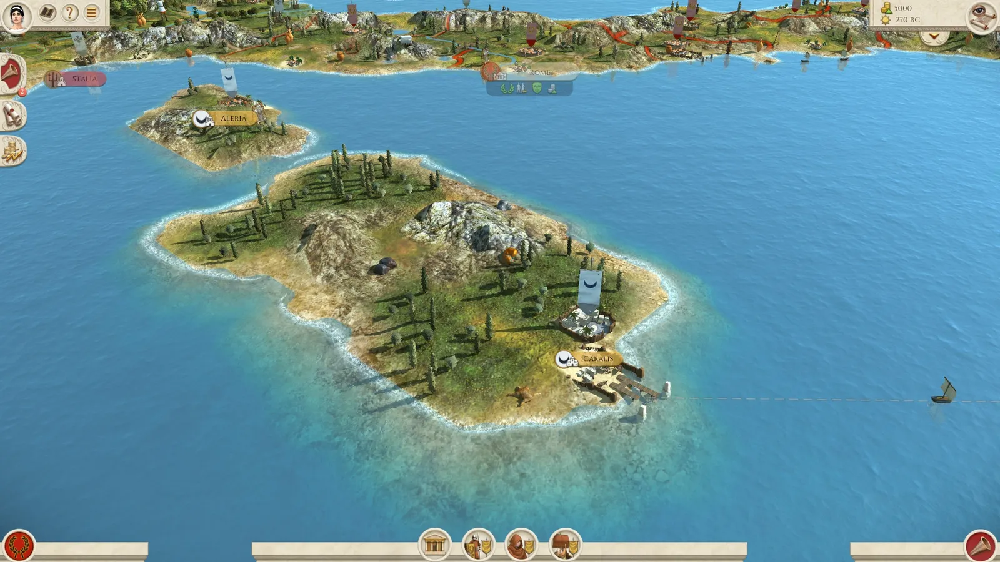
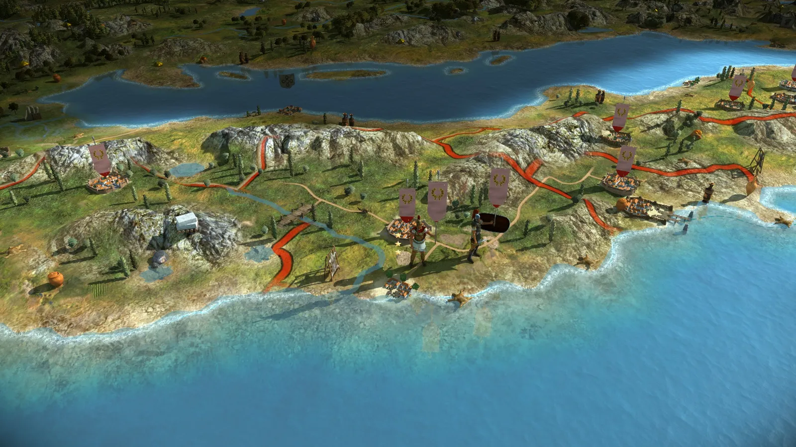
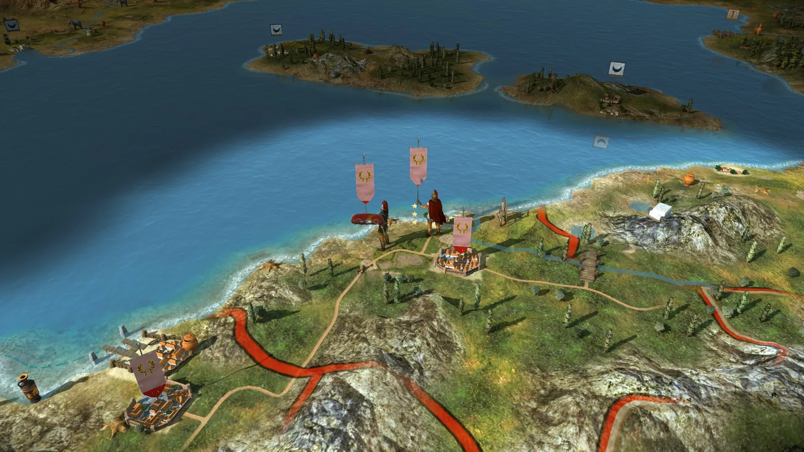

RTR: Imperium Surrectum
RTR: Imperium SurrectumDeveloper Diary 1: Italy and the islands on the new map
2021-10-07 · Tarnholm
Welcome to the first of many RTR: Imperium Surrectum Developer Diaries.
Hello! I'm Apple and I'm going to be the one delivering the first DD to you all today. In the coming weeks we are going to show you the many changes we are introducing in RIS 0.2.0, so sit back relax of course give us your comments. But for now, let's start with showing you all some of our map changes.
The Map
One of the largest changes for 0.2.0 is the introduction of a much larger, more detailed map based upon the great Mundus Magnus map. We are using all the 199 available region slots, filling the map with plenty of cities to target in your conquests. The new map doesn't just add new cities but also new landmasses. It now stretches from rainy Ireland to the lush Indus Valley, from the cold forests of Scandinavia to the scorchingly hot Sahara desert.

The island of Sicily is divided between the Carthaginians in the west, holding the city of Lilybaeum, the Free Peoples holding the cities of Agrigentum and Messana, and the Greek City-States holding the mighty city Syracuse. This and the included strait towards southern Italy and the Roman Republic all but guarantees a mighty showdown on the island.

Down at the iconic boot of Italy, we find the cities of Tarentum & Croton, former Greek colonies now firmly under the control of the Roman Republic as well as the Roman colony Venusia, established after the Third Samnite War.


Further up north is the location of Ancona, held by the Free Peoples, and the Roman city of Arretium, even further up north lies Bononia, a city founded as Felsina by the Etruscans and later while occupied by the Celtic Boii known as Bona. It's also held by the Free Peoples. Surely two prospecting targets for the Republic.

We have reached the most northern part of Italy with the mighty Alps as its border. The Po Valley as the region is called includes the cities Stalia and Patavium occupied by the Free Cities as well as the city of Mediolanum, owned by the Celts. Who will win the race to conquer the rich valley?

Finally, let's take a look at the of islands Corsica and Sardinia. Both are owned by the mighty Carthaginians. On the island Corsica lies Aleria and on Sardinia, you'll find the city of Caralis. Both are within striking distance from Rome itself and any keen Roman player better secure the islands to protect mainland Italy!

We also updated some finer details on the map like the models for units so that they look equally as good on the campaign map as they do in battles. He is a peek at a Roman General and unit.


That's all we have to show for this time. We will be sharing more information as we progress towards our end of summer release 0.2.0. Until then enjoy the Summer. 🏖️
https://www.reddit.com/r/totalwar/comments/oer91h/rtr_imperium_surrectum_developer_diary_1/